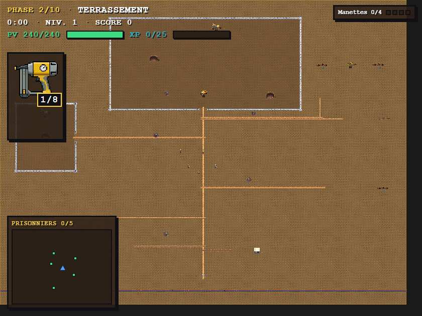
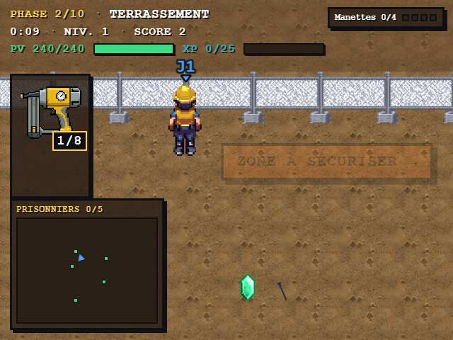
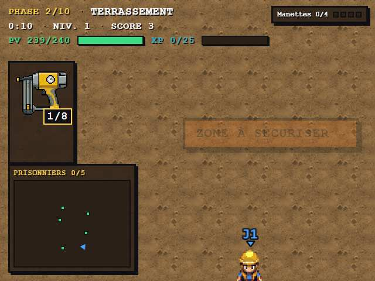

Le stage est maintenant COMPOSÉ depuis un plan masse : portail sur la route sud, base vie et parc engins à l'accès, fouilles clôturées (BLOQUANTES en jeu), déblais adjacents, pistes continues. Contraintes vérifiées par tests : deux machines jamais collées · rien hors zone · anneaux fermés sauf ouvertures · chemins connexes · spawn dégagé.

Fouille principale clôturée au nord (terre excavée sombre, pelleteuse au front, camion à la rampe) · fouille secondaire ouest · déblais à l'est · stock de terre SE · piquets topo NE/SO · parc engins + base vie près du portail · pistes reliant tout.

La clôture BLOQUE physiquement le joueur (et les ennemis) — l'anneau se contourne par l'ouverture côté portail.

chargement…
Rejouable en vrai : http://192.168.1.185:3000/?autostart=solo&level=2&seed=1 (ou niveau 2 depuis le titre).